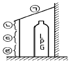
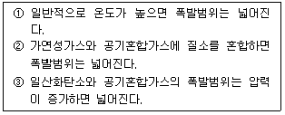
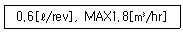
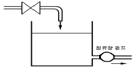

가스산업기사 (2004-03-07 기출문제)
1과목: 연소공학
1. 0℃, 1기압에서 C3H8 5kg의 체적은 몇 m3인가?(단, 이상기체로 가정하고 C의 원자량은12, H의 원자량은1 이다.)
- 0.63
- 1.54
- 2.55
- 3.67
(정답률: 79%)

2. 자연발화를 방지하는 방법으로 틀린 것은?
- 통풍을 잘 시킬 것
- 저장실의 온도를 높일 것
- 습도가 높은 것을 피할 것
- 열이 발생되지 않게 퇴적방법에 주의할 것
(정답률: 89%)
3. 다음 화염에 대한 설명 중 틀린 것은?
- 환원염은 수소나 CO를 함유하고 있다.
- 무휘염은 온도가 높은 무색불꽃을 말한다.
- 산화염은 외염의 내측에 존재하는 불꽃이다.
- 불꽃 중에 탄소가 많으면 대체로 황색으로 보인다.
(정답률: 47%)
4. 고체가 액체로 되었다가 기체로 되어 불꽃을 내면서 연소하는 경우를 무슨 연소라 하는가?
- 확산연소
- 자기연소
- 표면연소
- 증발연소
(정답률: 71%)
5. 다음 가스 중 공기와 혼합될 때 폭발성 혼합 가스를 형성하지 않는 것은?
- 알곤
- 도시가스
- 암모니아
- 일산화탄소
(정답률: 79%)
6. 다음 중 가스 연소시 기상 정지반응을 나타내는 기본반응식은?
- H + O2 → OH + O
- O + H2 → OH + H
- OH + H2 → H2O + H
- H + O2 + M → HO2 + M
(정답률: 78%)
7. 공기중에서 폭발범위가 큰 것에서 작은 순서로 이루어진 것은?
- 프로판 - 아세틸렌 - 수소 - 일산화탄소
- 프로판 - 수소 - 아세틸렌 - 일산화탄소
- 수소 - 아세틸렌 - 일산화탄소 - 프로판
- 아세틸렌 - 수소 - 일산화탄소 - 프로판
(정답률: 80%)
8. 600L의 용기에 40 atmabs, 27℃ 에서 산소(O2)가 충전되어 있다. 이 때 산소는 몇 kg이 충전되어 있는가?
- 4.3 kg
- 15.6 kg
- 24.2 kg
- 31.2 kg
(정답률: 58%)
9. 일산화탄소(CO) 10Nm3를 연소시키는데 필요한 산소량(Nm3)은 얼마인가?
- 17.2 Nm3
- 23.8 Nm3
- 35.7 Nm3
- 45.0 Nm3
(정답률: 64%)
10. 다음 연료 중 착화온도가 가장 높은 가스는?
- 메탄
- 목탄
- 휘발유
- 프로판
(정답률: 74%)
11. 다음 중 기상 폭발 발생을 예방하기 위한 대책으로 적합치 않은 것은?
- 환기에 의해 가연성 기체의 농도 상승을 억제한다.
- 집진장치 등에서 분진 및 분무의 퇴적을 방지한다.
- 휘발성 액체를 불활성 기체와의 접촉을 피하기 위해 공기로 차단한다.
- 반응에 의해 가연성 기체의 발생 가능성을 검토하고 반응을 억제하거나 또는 발생한 기체를 밀봉한다.
(정답률: 78%)
12. 100℃의 수증기 1kg이 100℃의 물로 응결될 때 수증기 엔트로피 변화량은 몇 kJ/K 인가? (단, 물의 증발잠열은 2256.7kJ/kg 이다.)
- -4.87
- -6.⑤
- -7.24
- -8.67
(정답률: 69%)
13. 연소과정에서 발생하는 그을음에 관한 설명이다. 틀린것은?
- 연료의 비중이 높을수록 발생량이 많다.
- 연료 중 잔류탄소량이 많을수록 발생량이 많다.
- 공기비가 낮을 때는 단위가스당 발생량이 높아진다.
- 분무입경이 클수록 발생량이 적다.
(정답률: 47%)
14. 위험성물질의 정도를 나타내는 용어들에 관한 설명이 잘못된 것은?
- 화염일수한계가 작을수록 위험성이 크다.
- 최소 점화에너지가 작을수록 위험성이 크다.
- 위험도는 폭발범위를 폭발하한계로 나눈 값이다.
- 위험도가 특히 큰 물질로는 암모니아와 브롬화메틸이 있다.
(정답률: 64%)
15. 프로판을 연소하여 20℃ 물 1 톤을 끓이려고 한다. 이 장치의 열효율이 100%라면 필요한 프로판 가스의 양은 얼마인가?(단, 프로판의 발열량은 12218kcal/kg 이다.)
- 0.75㎏
- 0.65㎏
- 0.55㎏
- 0.45㎏
(정답률: 51%)
16. 용기내부에 보호가스를 압입하여 내부압력을 유지함으로서 가연성가스가 용기내부로 유입되지 아니하도록 한 방폭구조는 어느 것인가?
- 내압(耐壓)방폭구조
- 유입(油入)방폭구조
- 압력(壓力)방폭구조
- 안전증(增)방폭구조
(정답률: 55%)
17. 다음은 이상기체에 대한 설명이다. 틀린 것은?
- 보일· 샤를의 법칙을 만족한다.
- 비열비(Cp/Cv)는 온도에 따라 변한다.
- 분자 사이의 충돌은 완전 탄성체로 이루어진다.
- 내부 에너지는 체적에 관계없이 온도에 의해서만 결정된다.
(정답률: 54%)
18. 공기를 차단시키며 화염에서 나오는 복사열을 차단시키는 효과가 있고 발생기 수소나 수산화기와 결합하여 화염의 연쇄 전파 반응을 중단시키는 소화제는?
- 물
- 탄산가스
- 드라이케미칼분말
- 하론
(정답률: 47%)
19. 다음 중 연소의 3요소인 점화원과 관계가 없는 것은?
- 정전기
- 기화열
- 자연발화
- 단열압축
(정답률: 49%)
20. 소염거리(소염직경)에 대한 설명으로 옳지 않은 것은?
- 소염 직경은 소염거리 보다도 보통 20-25%정도 크다.
- 소염 거리이하에서 불꽃이 꺼지는 이유는 미연소가스에 열이 쉽게 축열되기 때문이다.
- 가스 연소 기구의 노즐 크기는 역화를 방지하기 위해 소염직경보다 작은 것이 일반적이다.
- 두 개의 평행평판 사이의 거리가 좁아지면 화염이 더 이상 전파되지 않는 거리의 한계치가 있는데, 이를 소염거리라 한다.
(정답률: 41%)
2과목: 가스설비
21. 이음새 없는(Seamless) 용기에 대한 설명으로 옳지 않은 것은?
- 초저온 용기의 재료에는 주로 탄소강이 사용된다.
- 고압에 견디기 쉬운 구조이다.
- 내압에 대한 응력분포가 균일하다.
- 제조법에는 만네스만식이 대표적이다.
(정답률: 70%)
22. 다음 중 흡수식냉동기의 기본사이클에 해당하지 않는 것은?
- 흡수
- 압축
- 응축
- 증발
(정답률: 62%)
23. 전양정:27[m], 유량:1.2[m3/min], 펌프의 효율:80[%]인 경우 펌프의 축동력 L[Ps]는 얼마인가?(단, 액체의 비중은 1,000[kg/m3]이다.)
- 9[Ps]
- 3[Ps]
- 12[Ps]
- 6[Ps]
(정답률: 54%)
24. 1단감압식저압조정기의 입구압력 범위는 얼마인가?
- 0.01~0.1MPa
- 0.1~1.56MPa
- 0.07~1.56MPa
- 조정압력이상~1.56MPa
(정답률: 50%)
25. 냉동설비에 사용되는 냉매가스의 구비조건으로 옳지 않은 것은?
- 안전성이 있어야 한다.
- 증기의 비체적이 커야 한다.
- 증발열이 커야 한다.
- 응고점이 낮아야 한다.
(정답률: 73%)
26. LPG 를 이송시키는 펌프에 베이퍼록(Vapor lock)의 발생을 방지하기 위한 조치로 가장 옳은 것은?
- 펌프의 회전속도를 빠르게 한다.
- 탱크를 냉각 시킨다.
- 흡입배관의 관경을 크게 한다.
- 펌프의 설치 위치를 높인다.
(정답률: 66%)
27. "잔가스용기" 라 함은 고압가스의 충전압력이 얼마인 상태를 말하는가?
- 1/2 미만
- 1/3 미만
- 1/4 미만
- 1/5 미만
(정답률: 64%)
28. 배관내 가스 중의 수분 응축 또는 관연결 잘못으로 부식으로 인하여 지하수가 침입하여 가스의 공급이 중단되는 것을 방지하기 위해 설치하는 것은?
- 세척기
- 수취기
- 압송기
- 정압기
(정답률: 59%)
29. 압축기 윤활유 선택시 유의사항으로 옳지 않은 것은?
- 열안전성이 커야 한다.
- 화학반응성이 작아야 한다.
- 항유화성(抗油化性)이 커야 한다.
- 인화점과 응고점이 높아야 한다.
(정답률: 51%)
30. 다음 고압가스 안전장치(밸브)중 고온에서의 사용이 적당하지 않은 밸브는?
- 중추식
- 파열판식
- 가용전식
- 스프링식
(정답률: 46%)
31. 다음 중 옳은 설명은?
- 비례 한도내에서 응력과 변형은 반비례한다.
- 탄성 한도내에서 가로와 세로 변형률의 비는 재료에 관계없이 일정한 값이 된다.
- 안전율은 파괴강도와 허용응력에 각각 비례한다.
- 인장시험에서 하중을 제거시킬 때 변형이 원상태로 되돌아가는 최대 응력값을 탄성한도라 한다.
(정답률: 52%)
32. 저온 장치용 금속재료로 적당하지 않은 것은?
- 탄소강
- 황동
- 9 % 니켈강
- 18-8 스테인레스강
(정답률: 50%)
33. 가연성 액화가스를 탱크로리로 충전하던 중 탱크로리와 충전관과의 접합부분으로부터 액화가스가 급격히 누설하였다. 이 때 가장 먼저 조치해야 할 사항은?
- 소화기를 준비하여 화재에 대비한다.
- 역류밸브를 가동하여 가스를 회수한다.
- 긴급차단밸브를 조작하여 가스를 차단한다.
- 탱크로리를 급히 안전한 장소로 대피시킨다.
(정답률: 76%)
34. 고압 가스 용기에 사용되는 강은 탄소, 인, 유황의 함유량을 제한하고 있다. 제한하는 이유로 옳지 않은 것은?
- 인의 양이 많아지면 연신율이 감소한다.
- 황이 많아지면 고온가공성을 나쁘게 한다.
- 탄소량이 증가하면 연신율 충격치는 증가 한다.
- 구리의 양이 많아지면 냉간가공성이 나빠진다.
(정답률: 63%)
35. 고압가스 냉동제조시설의 자동제어장치에 해당하지 않는 것은?
- 저압차단장치
- 과부하보호장치
- 자동급수 및 살수장치
- 단수보호장치
(정답률: 59%)
36. 냉동기를 사용하여 0℃ 물 1 ton을 0℃ 얼음으로 만드는 데 30시간이 걸렸다면 이 냉동기의 용량은? (단, 1냉동톤=3,320kcal/hr)
- 약 0.3 냉동톤
- 약 0.8 냉동톤
- 약 1.3 냉동톤
- 약 1.8 냉동톤
(정답률: 52%)
37. 고압배관에 사용할 수 있는 탄소강 강관의 기호는?
- SG
- SPPS
- SPPH
- SPPW
(정답률: 75%)
38. 도시가스 제조에서 사이크링식 접촉분해(수증기개질)법에 사용하는 원료로 옳은 것은?
- 천연가스에서 원유에 이르는 넓은 범위의 원료를 사용할 수 있다.
- 석탄 또는 코크스만 사용할 수 있다.
- 메탄만 사용할 수 있다.
- 프로판만 사용할 수 있다.
(정답률: 83%)
39. 배관 연장 225m 의 본관에 200m3/h 의 가스를 흐르게 하려면 관경을 얼마로 하면 좋은가? (단, 기점-종점간의 압력 강하를 : 15㎜H20, 가스비중 : 0.64, 유량계수를 : 0.707로 한다.)
- 약10㎝
- 약15㎝
- 약25㎝
- 약30㎝
(정답률: 68%)
40. 고압장치 배관에 발생된 열응력을 제거하기 위한 이음이 아닌 것은?
- 상온스프링(cold spring)
- 슬라이드 이음
- 벨로우즈 이음
- 플랜지 이음
(정답률: 78%)
3과목: 가스안전관리
41. LP가스용 금속플렉시블호스에 대한 설명으로 옳은 것은?
- 호스 이음쇠는 플레어 또는 유니온의 접속기능을 갖추어야 한다.
- 호스의 길이는 한쪽 이음쇠의 끝에서 다른 쪽 이음쇠까지로 하며 길이허용오차는 + 4% , - 3% 이내로 한다.
- 스테인레스강은 튜브의 재료로 사용하여서는 아니 된다.
- 호스의 내열성시험은 100 ± 2℃ 에서 30 분간 유지 후 균열 등의 이상이 없어야 한다.
(정답률: 63%)
42. 안전구역내의 고압가스설비는 그 외면으로부터 다른 안전 구역안에 있는 고압가스설비의 외면까지 몇 m 이상의 거리를 유지하여야 하는가?
- 10m 이상
- 20m 이상
- 30m 이상
- 40m 이상
(정답률: 49%)
43. 소비중에는 물론 이동, 저장중에도 아세틸렌 용기를 세워 두는 이유는?
- 아세틸렌이 공기보다 가볍기 때문에
- 아세톤의 누출을 막기 위해서
- 아세틸렌이 쉽게 나오게 하기 위해서
- 정전기를 방지하기 위해서
(정답률: 77%)
44. LP 가스 용기에 그림과 같이 차광시설을 할 때 완전히 밀폐하여서는 안되는 부분은?

- ㉠
- ㉡
- ㉢
- ㉣
(정답률: 81%)
45. LPG 자동차의 용기에 설치하는 과충전 방지장치에 대한 설명으로 옳지 않은 것은?
- 충전용량이 용기내용적의 85% 를 충전한 경우에는 충전이 되지 않아야 한다.
- 눈으로 보아 사용상 유해한 흠, 균열 등 결함이 없어야 한다.
- 설정점은 용이하게 변경할 수 있어야 한다.
- 3MPa 이상의 압력으로 실시하는 내압시험에 합격한 것이어야 한다.
(정답률: 45%)
46. 공기액화분리에 의한 산소와 질소 제조시설에 아세틸렌가스가 소량 혼입되었다. 이 때 발생가능한 현상 중 가장 옳은 것은?
- 산소 아세틸렌이 혼합되어 순도가 감소한다.
- 아세틸렌이 동결되어 파이프를 막고 밸브를 고장낸다.
- 질소와 산소 분리 시 비점차이의 변화로 분리를 방해한다.
- 응고되어 이동하다가 구리와 접촉하여 산소 중에서 폭발할 가능성이 있다.
(정답률: 84%)
47. 일반도시가스공급시설인 정압기의 분해점검 주기는?
- 1주일에 1회이상
- 1월에 1회이상
- 1년에 1회이상
- 2년에 1회이상
(정답률: 37%)
48. 암모니아에 대한 설명으로 옳지 않은 것은?
- 증발잠열이 크므로 냉동기 냉매에 사용한다.
- 물에 잘 용해한다.
- 암모니아 건조제로서 진한 황산을 사용한다.
- 암모니아용의 장치에는 직접 동을 사용할 수 없다.
(정답률: 53%)
49. 가스의 성질에 대한 설명으로 옳은 것은?
- 아세틸렌을 25kg/cm2 이상으로 충전할 때는 질소, 메탄 등의 희석제를 첨가한다.
- 암모니아는 공기중 연소하면 수소와 아산화질소로 되므로 이 방법이 제해조치로 쓰인다.
- 시안화수소는 독성이 있고 수분을 함유하여도 안정하다.
- 암모니아는 고온, 고압에서는 강재와는 반응하지 않으므로 강재용기에 저장한다.
(정답률: 67%)
50. 고압가스를 제조하고자 하는 자가 허가를 받아야 하는 행정기관은?
- 산업자원부장관
- 서울특별시장 및 광역시장
- 시장, 군수, 구청장
- 가스안전공사사장
(정답률: 53%)
51. 액화석유가스사용시설의 충전용 주관에 설치된 압력계의 점검 주기는?
- 월 1회 이상
- 분기 1회 이상
- 6월 1회 이상
- 년 1회 이상
(정답률: 64%)
52. 배관용 밸브에 대한 설명으로 옳지 않은 것은?
- 개폐용 핸들휠은 열림방향이 시계바늘 반대방향이어야 한다.
- 볼밸브는 완전히 열렸을 때 핸들방향과 유로의 방향이 평행이어야 한다.
- 용접식 밸브는 용접부에 대하여 방사선 투과시험결과 2급 이상이어야 한다.
- 밸브의 시트는 0.6MPa 이상의 공기 등으로 1분 이상 가압 하였을 때 누출이 없어야 한다.
(정답률: 55%)
53. 가연성가스와 독성가스의 누출 시 가스누출검지경보장치의 경보농도로 각각 옳은 것은?
- 폭발하한계의 25%이하, 허용농도이하
- 폭발하한계의 50%이하, 허용농도이하
- 폭발하한계의 25%이하, 허용농도의 50%이하
- 폭발하한계의 50%이하, 허용농도의 50%이하
(정답률: 63%)
54. LPG 판매 사업소의 시설 기준으로 옳지 않은 것은?
- 가스누출경보기는 용기보관실에 설치하되 일체형으로 설치한다.
- 용기보관실의 전기설비 스위치는 용기보관실 외부에 설치한다.
- 용기보관실의 실내온도는 40℃ 이하로 유지하여야 한다.
- 용기보관실 및 사무실은 동일부지내에 구분하여 설치한다.
(정답률: 69%)
55. 가스의 누출에 대한 설명으로 옳은 것은?
- 핀홀에서 가스의 누출량은 핀홀내경이 크거나 핀홀경의 길이가 길면 증대한다.
- 염소용기의 핀홀에서 가스가 누출 시 물을 뿌려 냉각시키면 누출량을 감소시킬 수 있다.
- 할로겐 누출검사는 정밀도가 양호하고 비눗물로 검출할 수 없는 소량의 누출도 검지할 수 있다.
- 천연가스는 공기보다 무거워 누출 시는 낮은 곳에 체류하기 쉽다.
(정답률: 49%)
56. 도시가스제조공정에서 원료 중에 함유되어 있는 황은 열분해 등으로 가스 중에 불순물로서 혼입하여 온다. 혼입하여 오는 황분을 제거하는 방법으로 건식탈황법에서 사용하는 탈황제는?
- 탄산나트륨(Na2CO3)
- 산화철(Fe2O3ㆍ3H2O)
- 암모니아수(NH4OH)
- 염화칼슘(CaCl2)
(정답률: 43%)
57. 원통형 용기를 다음과 같은 허용응력[kg/mm2]과 인장강도[kg/mm2]의 재료를 사용할 경우 안정성이 가장 높은 것은?
- 허용응력 15, 인장강도 45
- 허용응력 20, 인장강도 50
- 허용응력 25, 인장강도 60
- 허용응력 30, 인장강도 70
(정답률: 47%)
58. 고압가스 안전관리법에 의한 용기에 충전하는 시안화수소의 순도는?
- 92% 이상
- 95% 이상
- 96% 이상
- 98% 이상
(정답률: 83%)
59. 다음에서 폭발범위에 대한 설명으로 옳게 나열된 것은?

- ①
- ③
- ②, ③
- ①, ②, ③
(정답률: 78%)
60. 액화석유가스의 자동차 용기 충전시설 기준으로 옳지 않은 것은?
- 가스주입기는 투터치형으로 할 것
- 충전기의 충전호스의 길이는 5m 이내로 할 것
- 충전호스에 과도한 인장력이 가해졌을 때 충전기와 가스 주입기가 분리될 수 있는 안전장치를 설치할 것
- 정전기를 유효하게 제거할수 있는 정전기 제거장치를 설치할 것
(정답률: 87%)
4과목: 가스계측
61. 다음 중 실측식 가스미터가 아닌 것은?
- 다이어프램식 가스미터
- 와류식 가스미터
- 회전자식 가스미터
- 습식 가스미터
(정답률: 57%)
62. 게이지 압력을 나타내는 식은?
- Pg=대기압-진공압
- Pg=절대압-대기압
- Pg=대기압+절대압
- Pg=절대압
(정답률: 63%)
63. 유입된 가스가 일정한 액면 안에 있는 계량통을 회전시켜 이 회전수를 재어 가스유량을 측정하는 기구는?
- 벤츄리미터
- 습식가스미터
- 터빈식가스미터
- 와류량계
(정답률: 48%)
64. 나프탈렌 분석에 적당한 분석방법은?
- 요드적정법
- 중화적정법
- 가스크로마토그래피법
- 흡수평량법
(정답률: 78%)
65. 가스미터의 표시에 다음과 같은 내용이 있었다. 설명이 바른 것은?

- 기준실 1주기 체적이 0.6[ℓ ], 사용 최대 유량은 시간당 1.8[m3]이다.
- 계량실 1주기 체적이 0.6[ℓ ], 사용 감도 유량은 시간당 1.8[m3]이다.
- 기준실 1주기 체적이 0.6[ℓ ], 사용 감도 유량은 시간당 1.8[m3]이다.
- 계량실 1주기 체적이 0.6[ℓ ], 사용 최대 유량은 시간당 1.8[m3]이다.
(정답률: 82%)
66. 액위(liquid level)를 측정할 수 있는 액면계측기가 아닌 것은?
- 부자식액면계
- 압력식액면계
- 용적식액면계
- 방사선액면계
(정답률: 29%)
67. 가스미터의 기밀시험 압력은 얼마인가?
- 700mmH2O
- 1000mmH2O
- 500mmH2O
- 1200mmH2O
(정답률: 65%)
68. 캐리어가스의 유량이 50㎖/min 이고, 기록지의 속도가 3cm/min 일 때 어떤 성분시료를 주입하였더니 주입점에서 성분의 피이크까지의 길이가 15cm 였다면 지속용량은?
- 10㎖
- 250㎖
- 150㎖
- 750㎖
(정답률: 59%)
69. 시험대상인 가스미터의 유량이 350m3/h 이고 기준 가스미터의 지시량이 330m3/h 일 때 가스미터의 오차율은?
- 4.4%
- 5.7%
- 6.1%
- 7.5%
(정답률: 64%)
70. 시료 가스를 각각 특정한 흡수액에 흡수시켜 흡수 전후의 가스체적을 측정하여 가스의 성분을 분석하는 방법이 아닌 것은?
- 오르쟈트(Orsat)법
- 헴펠(Hempel)법
- 게겔(Gockel)법
- 적정(滴定)법
(정답률: 73%)
71. 메탄, 에틸알콜, 아세톤 등을 검지하고자 할 때 올바른 검지법은?
- 시험지법
- 흡광광도법
- 가연성 가스검출기
- 검지관법
(정답률: 65%)
72. 막식가스미터에 대한 설명으로 거리가 먼 것은?
- 저가이다.
- 일반수요가에 널리 사용된다.
- 정확한 계량이 가능하다.
- 부착 후의 유지관리의 필요성이 없다.
(정답률: 60%)
73. 열전 온도계를 수은 온도계와 비교했을 때 갖는 장점이 아닌 것은?
- 열용량이 크다.
- 국부온도의 측정이 가능하다.
- 측정온도범위가 크다.
- 응답속도가 빠르다.
(정답률: 40%)
74. 다음 온도계 중 노(爐) 내의 온도측정이나 벽돌의 내화도 측정용으로 적당한 것은?
- 더어미스터
- 제겔콘
- 색온도계
- 광고온도계
(정답률: 47%)
75. 가스가 가스미터를 통과하지 못하는 불통의 발생 원인과 거리가 먼 것은?
- 크랭크축이 녹슬었을 때
- 밸브시트에 이물질이 점착됐을 때
- 회전장치에 고장이 발생했을 때
- 계량막이 파손되었을 때
(정답률: 66%)
76. 열전대 온도계의 구성 요소에 해당하지 않는 것은?
- 보호관
- 열전대선
- 보상 도선
- 저항체 소자
(정답률: 68%)
77. 표준 계측기기의 구비조건으로 옳지 않은 것은?
- 경년변화가 클 것
- 안정성이 높을 것
- 정도가 높을 것
- 외부조건에 대한 변형이 적을 것
(정답률: 83%)
78. 계량기의 감도가 좋으면 어떠한 변화가 오는가?
- 측정시간이 짧아진다.
- 측정범위가 좁아진다.
- 측정범위가 넓어지고, 정도가 좋다.
- 폭 넓게 사용할 수가 있고, 편리하다.
(정답률: 75%)
79. 온도 25℃, 노점 19℃ 인 공기의 상대습도를 구하면? (단, 25℃ 및 19℃에서의 포화수증기압은 각각 23.76mmHg 및 16.47mmHg 이다.)
- 56 %
- 69 %
- 78 %
- 84 %
(정답률: 65%)
80. 다음 그림과 같이 유출량은 일정할 때 유입량이 증가됨에 따라 수위가 상승하여 평형을 이루지 못하고 넘치게 되는 제어계의 요소에 해당되는 것은?

- 적분요소
- 미분요소
- 낭비시간요소
- 2차지연요소
(정답률: 50%)
먼저, C3H8의 몰질량을 구해보자.
C3H8의 분자량 = 3 × 12 + 8 × 1 = 44 g/mol
따라서, 5 kg의 C3H8은 몇 몰인지 계산하면 다음과 같다.
5 kg ÷ 44 g/mol = 113.636 mol
이제, 체적을 계산해보자.
PV = nRT에서 V = nRT/P
온도 T는 0℃ = 273.15 K로 변환해야 한다.
V = (113.636 mol × 8.314 J/mol·K × 273.15 K) / (1 × 10^5 Pa)
V = 24.465 m^3
따라서, C3H8 5kg의 체적은 24.465 m^3이다.
하지만, 보기에서는 단위가 m^3이 아니라, m^3/kg으로 주어졌다. 따라서, 위에서 구한 체적을 5kg으로 나누어준다.
24.465 m^3 ÷ 5 kg = 4.893 m^3/kg
보기에서는 소수점 첫째자리까지만 주어졌으므로, 4.893을 반올림하여 2.55가 된다.